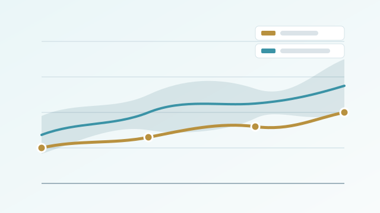
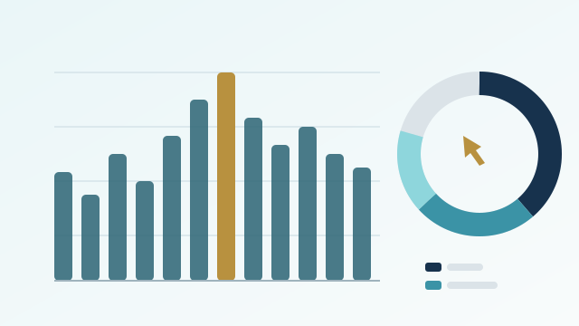
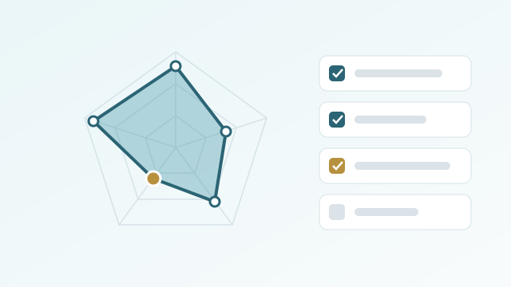
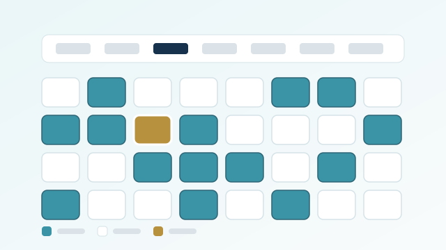

公開中の分析ツール
データで、宿泊経営のこれからを考える。
目的に合うツールから、現場のヒントを見つけましょう。

宿泊料金トレンド
同じ宿泊条件で、地域や施設ごとの料金と取得日ごとの推移を比較します。

インバウンド宿泊者分析
外国人宿泊需要や国・地域別構成を、都道府県ごとに分析します。

旅館・ホテル DXかんたん診断
施設の現状から、DXで優先したいポイントを整理します。

簡易PMSデモ
予約登録から部屋割り・客室状況表まで、フロント業務の基本の流れをブラウザで体験できます。
目的から選ぶ
公開中の11ツールとサンプルレポートを4つの目的で整理しています。すべて無料で使えます。
自施設を知る
自分の施設の現在地を確かめる。
地域を知る
公的統計から、地域の需要と供給を読む。
市場の動きを知る
観光株と宿泊料金の動きを追う。
実験・体験する
実験的なツールと、架空データで動くデモ。実績値ではありません。
宿泊経営の課題整理（β）
地域データと施設情報から、DX・人手不足・市場環境を考えるヒントを提示します。
簡易PMSデモ（予約・部屋割り）
架空ホテル（全20室）で、予約登録から部屋割り・客室状況表・当日台帳まで、フロント業務の基本の流れをブラウザだけで体験できます。入力データは端末内にのみ保存されます。
予約エンジンデモ（公式予約サイト）
架空ホテルの公式予約サイトで、空室検索からプラン選択・予約・キャンセルまでを体験。確定した予約は簡易PMSデモのフロント画面に届きます（同一ブラウザ内で連動）。日英対応。
多言語旅館サイトデモ
架空の宿「ホテル翠蓮」の公式サイトを日英中韓の4言語で。旅館のAIO対策を行った後のサイトです。海外ゲストがサイトを見て予約し、フロントに届くまでの動線を体験できます。
お知らせ
宿泊DXラボ
とは
宿泊DXとは、予約・客室・清掃・会計・勤怠といった日々の業務と経営の判断を、データとデジタルの道具で見直していくことです。宿泊DXラボは、旅館・ホテルがその一歩目を自分で確かめられるよう、診断と分析のツールを無料で公開しています。運営は合同会社UGATTAです。
料金、市場動向、インバウンド、DXなどを、できるだけ分かりやすく見える化し、「今、何が起きているのか」
「自施設はどこにいるのか」
「次に何を考えるべきか」を判断するための材料を提供します。
答えを決めつけるのではなく、宿泊経営を考えるための新しい視点をつくる。
それが、宿泊DXラボです。